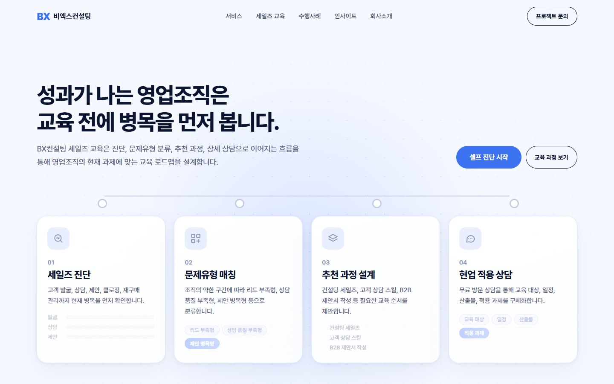
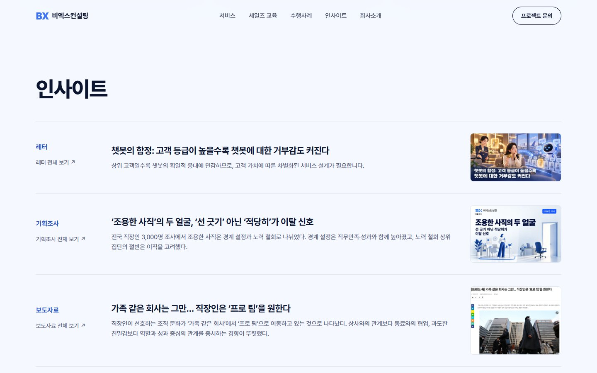
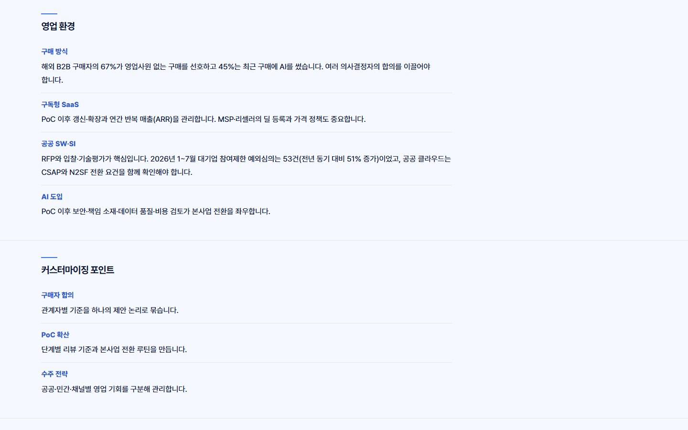
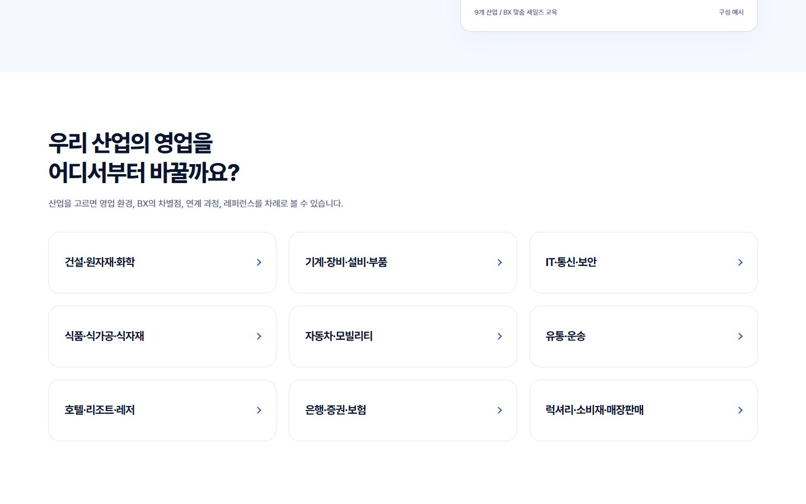
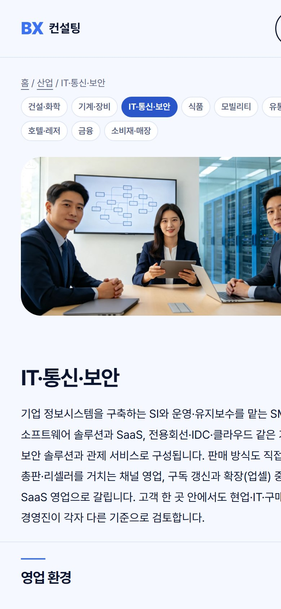
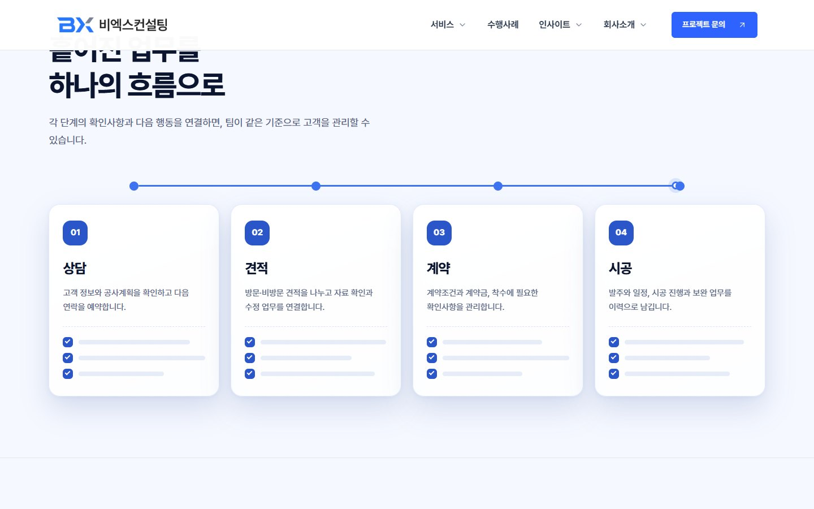
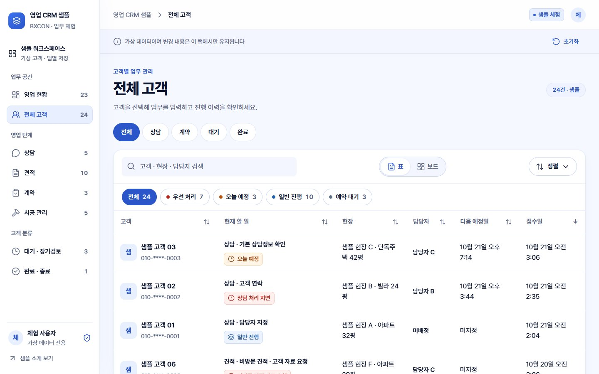

세 가지 작업
같은 디자인 기준(C안)과 같은 검수 방식으로 홈, 산업별 페이지, CRM 체험 화면을 이어서 만들었습니다.
이미지 슬라이드 홈을, 모션 중심 홈으로
현재 홈페이지의 문구와 서비스 7개는 그대로 쓰고, 고객사 의사결정자에게 "한 팀이 전부 해결한다"는 인상을 주는 홈을 제안하였습니다.


정한 것
- 벤치마크를 바꿔 두 시안을 만들었습니다. 1차는 어두운 바탕의 스크롤 연출, 2차는 다른 사례를 기준으로 밝은 바탕으로 다시 만들고, 둘의 장점을 합쳐 C안으로 정리하였습니다.
- 뼈대는 그대로 둡니다. 홈의 일곱 섹션 순서와 CMS, 문의 기능은 바꾸지 않고 배치와 모션만 제안하였습니다.
- 문구는 현재 홈페이지 원문 기준입니다. 새로 쓴 문구는 따로 표시해 승인을 받도록 하였습니다.
보고서로 분리한 것
- 변경 수준. 일곱 섹션 중 세 개는 새로 제작, 네 개는 겉모습과 배치 변경입니다.
- 승인이 필요한 네 가지. 삭제 항목 3건, 새 소개 문구, 외부 라이브러리 3종(GSAP, ScrollTrigger, Lenis), 밝은 바탕과 어두운 바탕 선택입니다.
산업별 솔루션, 세 산업에서 아홉 산업으로
전문 강사를 섭외해 신규 산업 교육 시장을 여는 구상을 홈페이지에서 소개하는 페이지입니다. 제약, IT, 반도체 세 산업으로 시작하였고, 피드백과 제 판단을 거치며 산업 9개의 상세 페이지와 전체보기로 다시 구성하였습니다.
지킨 원칙
- 근거 확인. 본문의 수치와 제도는 기사와 공식 자료의 원문을 직접 열어 날짜와 수치를 확인하고, 근거를 별도 문서에 기록하였습니다. 화면에는 출처 목록을 싣지 않았습니다.
- 실적을 만들지 않음. 홈페이지에 공개된 고객사 로고만 업종에 따라 배정하고, 산업별 교육 수행 실적과 성과는 새로 쓰지 않았습니다.
- AI 이미지 표기. 산업 장면 이미지 9장은 AI로 생성하였습니다.
구성
- 메뉴. 서비스 앞에 "산업"을 두고, 전체보기의 3×3 카드에서 산업 상세로 이어집니다. 모든 상세에 9개 산업 이동 칩이 있습니다.
- 상세 흐름. 사진, 산업 개요, 영업 환경, 커스터마이징 포인트, 특화 과정, 레퍼런스, 상담 안내 순서입니다.
- 아홉 산업. 건설·원자재·화학, 기계·장비·설비·부품, IT·통신·보안, 식품·식가공·식자재, 자동차·모빌리티, 유통·운송, 호텔·리조트·레저, 은행·증권·보험, 럭셔리·소비재·매장판매입니다.
왜, 어떻게 바꿨는가
10월 21일부터 26일까지 구성을 여러 번 바꿨습니다. 바꾼 이유는 피드백, 제가 화면을 보고 내린 판단, 근거 확인에서 나왔습니다.
10월 21일
세 산업 시안제약, IT, 반도체 상세 3개와 모션 도식으로 시작하였습니다. 모션은 "밋밋하고 세 산업이 같아 보인다"는 지적을 받아, 의사결정자가 속으로 묻는 질문에서 출발하는 방식으로 여러 번 다시 만들었습니다.
세 산업 시안제약, IT, 반도체 상세 3개와 모션 도식으로 시작하였습니다. 모션은 "밋밋하고 세 산업이 같아 보인다"는 지적을 받아, 의사결정자가 속으로 묻는 질문에서 출발하는 방식으로 여러 번 다시 만들었습니다.
10월 22일
깊이 보강깊이를 더하고 흐름을 변화, 필요성, 교육 전략, 교육 내용, 기대효과 순으로 정리하라는 피드백을 받았습니다. 영업 교육 표준 제안서의 키워드 12개를 기준으로 산업별 조사를 하고, 산업마다 기사와 공식 자료 원문 8~9건을 직접 열어 확인해 문안을 고쳤습니다. 경쟁 교육사를 소개하는 기사는 출처에서 뺐습니다.
깊이 보강깊이를 더하고 흐름을 변화, 필요성, 교육 전략, 교육 내용, 기대효과 순으로 정리하라는 피드백을 받았습니다. 영업 교육 표준 제안서의 키워드 12개를 기준으로 산업별 조사를 하고, 산업마다 기사와 공식 자료 원문 8~9건을 직접 열어 확인해 문안을 고쳤습니다. 경쟁 교육사를 소개하는 기사는 출처에서 뺐습니다.
10월 23일
전체보기 정리산업 전체보기를 줄 목록에서 카테고리 라벨이 붙은 카드로 바꾸고, 상세의 구간 순서를 산업, 영업 환경, BX의 차별점, 연계 과정, 레퍼런스로 다시 배열하였습니다.
전체보기 정리산업 전체보기를 줄 목록에서 카테고리 라벨이 붙은 카드로 바꾸고, 상세의 구간 순서를 산업, 영업 환경, BX의 차별점, 연계 과정, 레퍼런스로 다시 배열하였습니다.
10월 26일
현장 용어와 영업 환경산업 용어와 영업 환경의 구분이 보이지 않으면 전문성이 느껴지지 않는다고 판단하였습니다. 제약은 병원·의원·약국(ETC·OTC), IT는 SaaS·공공 SW·AI 도입, 반도체는 제조사와 장비·소재·부품으로 나누어 영업 환경 카드와 현장 용어를 넣었습니다.
현장 용어와 영업 환경산업 용어와 영업 환경의 구분이 보이지 않으면 전문성이 느껴지지 않는다고 판단하였습니다. 제약은 병원·의원·약국(ETC·OTC), IT는 SaaS·공공 SW·AI 도입, 반도체는 제조사와 장비·소재·부품으로 나누어 영업 환경 카드와 현장 용어를 넣었습니다.
10월 26일
상세 재구성과 아홉 산업카테고리 이름은 "기계·장비·설비·부품"인데 내용은 반도체만 다루는 점을 문제로 보고, 이름에 든 업종 전체를 한 문단 안에서 다루도록 바꿨습니다. 모션, 용어 사전, 기대효과, 참고 자료를 빼고 사진, 개요, 영업 환경, 커스터마이징 포인트, 특화 과정, 레퍼런스 순으로 압축하였고 산업은 3개에서 9개로 넓혔습니다.
상세 재구성과 아홉 산업카테고리 이름은 "기계·장비·설비·부품"인데 내용은 반도체만 다루는 점을 문제로 보고, 이름에 든 업종 전체를 한 문단 안에서 다루도록 바꿨습니다. 모션, 용어 사전, 기대효과, 참고 자료를 빼고 사진, 개요, 영업 환경, 커스터마이징 포인트, 특화 과정, 레퍼런스 순으로 압축하였고 산업은 3개에서 9개로 넓혔습니다.
10월 26일
최신 근거와 짝 맞추기새로 넣은 6개 산업은 웹 검색 후 기사 원문을 열어 날짜와 수치를 확인하였습니다. 커스터마이징 포인트는 영업 환경의 항목마다 "우리 교육으로 어떻게 풀겠다"가 짝으로 따라가도록 다시 썼고, 실제 BX 과정명과 산출물만 사용하였습니다.
최신 근거와 짝 맞추기새로 넣은 6개 산업은 웹 검색 후 기사 원문을 열어 날짜와 수치를 확인하였습니다. 커스터마이징 포인트는 영업 환경의 항목마다 "우리 교육으로 어떻게 풀겠다"가 짝으로 따라가도록 다시 썼고, 실제 BX 과정명과 산출물만 사용하였습니다.
10월 26일
분량 조정내용이 길어 개요 1~2문장, 영업 환경 4행, 커스터마이징 3행으로 줄였다가 호텔·리조트·레저가 얇다고 판단해 다시 보강하였습니다. 마지막에는 개요는 길어도 두고, 영업 환경과 커스터마이징만 읽기 쉽게 압축하였습니다.
분량 조정내용이 길어 개요 1~2문장, 영업 환경 4행, 커스터마이징 3행으로 줄였다가 호텔·리조트·레저가 얇다고 판단해 다시 보강하였습니다. 마지막에는 개요는 길어도 두고, 영업 환경과 커스터마이징만 읽기 쉽게 압축하였습니다.
10월 26일
제약을 자동차·모빌리티로공개된 고객사 레퍼런스가 없는 제약 페이지를 빼고, 공개 로고가 있는 자동차·모빌리티로 바꿔 상세 9개를 유지하였습니다.
제약을 자동차·모빌리티로공개된 고객사 레퍼런스가 없는 제약 페이지를 빼고, 공개 로고가 있는 자동차·모빌리티로 바꿔 상세 9개를 유지하였습니다.


검수
화면 크기전체보기와 상세 9개를 320, 375, 768, 1440px에서 40개 조합으로 확인하였고 가로 넘침, 깨진 이미지, 스크립트 오류가 없었습니다.
링크내부 링크가 끊긴 곳이 없고, 산업 페이지에 연결한 외부 링크 18개가 모두 응답하며 제목이 맞았습니다.
내용 교정검수 중 편의점 통계를 택배 물량으로 쓴 문장, 택배 부문 매출을 회사 전체로 읽히게 쓴 문장, 보험 1,200% 규정의 적용 범위 등 수치와 범위 표기 9곳을 바로잡았습니다.
레퍼런스 배정공개 로고 49개 중 36개를 업종에 따라 배정하고, 공공기관·스포츠단체처럼 분류가 갈리는 13개는 임의로 배정하지 않았습니다.
동작문의 창의 내용 복사, Escape 닫기, 초점 복귀, 모바일 메뉴와 산업 이동, 모션 줄이기를 확인하였습니다.


CRM 체험 페이지에 C안 디자인과 모션
공개 홈페이지의 CRM 예시 소개와 체험 화면에 C안의 색, 알약 버튼, 카드 모양을 적용하였습니다. 최소한의 모션과 기능 참고 요소를 더해 저장소에 반영하였습니다.


판단한 것
- 되돌린 시도. 상세 슬라이드 패널과 대시보드 2단 구성을 만들어 보고 기존 구조로 되돌렸습니다. 업무 화면에서는 익숙한 아코디언이 낫다고 판단하였습니다.
- 넣지 않은 것. 이전 값이 없는 가상 데이터에는 추세 화살표를 붙이지 않았고, 단계 이동은 검증된 업무 양식을 거치도록 보드의 드래그 이동은 뺐습니다.
- 새 라이브러리 없음. CSS와 기존 방식의 작은 스크립트만 사용하였고, 모든 모션은 모션 줄이기에서 꺼집니다.
확인한 것
- 확인. 테스트 459건 통과, 타입 검사 오류 0건, 1440px와 390px 화면 확인, 모션 줄이기 상태 확인.
- 발견해 고친 문제. 스크롤을 크게 내리면 건너뛴 패널이 보이지 않던 오류를 최종 검수에서 찾아 고쳤습니다.
AI와 사람이 나눠 한 일
구현 속도는 AI가 냈고, 무엇을 만들지와 무엇을 만들지 않을지는 제가 정하였습니다.
AI가 한 일
- 화면과 모션 구현(Claude Code, Codex)과 반복 수정
- 화면 크기별 검증 스크립트, 대비·터치 영역·글자 크기 측정
- 기획안과 검증 문서 초안, 산업 장면 이미지 9장 생성
제가 한 일
- 방향 합의와 선택: 벤치마크 교체, 스크롤이 아닌 자동 재생, 속도와 정렬 결정, 제약 대신 자동차·모빌리티로 바꾸는 결정
- 사실의 경계 설정: 실적과 강사를 만들지 않고, 출처와 해석을 분리
- 되돌림 판단: 시도해 본 화면을 직접 보고 채택과 폐기를 결정하고, 본문이 길거나 얇다고 판단해 분량을 여러 번 조정
- 운영 사이트와의 정합성 대조를 요청하고 어긋난 항목을 정리
라이브 데모
아래 탭에서 실제로 움직이는 화면을 볼 수 있습니다. 산업 상세는 세 곳을 골랐고, 나머지 여섯 곳은 상세의 이동 칩에서 열 수 있습니다. 모든 화면은 이 사이트에 들어 있는 사본이며 고객사 로고는 비공개로 대체하였습니다.
탭을 선택하면 불러옵니다.